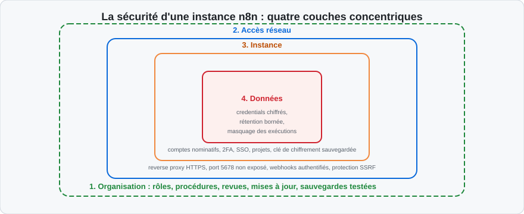
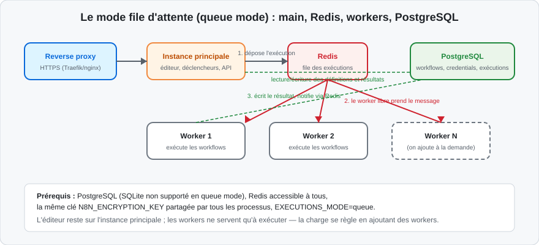
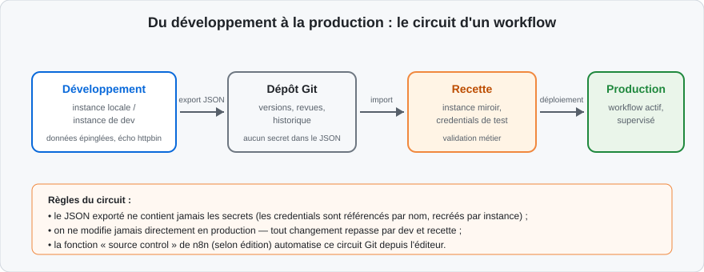
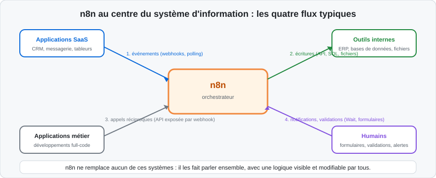

Ce qui change quand le flux devient critique
Les trois premiers jours ont produit des workflows qui fonctionnent — sur le poste du stagiaire, à heure de bureau, sous ses yeux. La production ajoute trois contraintes qui changent tout :
-
la continuité : le flux tourne la nuit, le week-end, pendant les congés de son concepteur — personne ne regarde ;
-
la charge : les volumes réels remplacent les dix items de test, et les API appellent au rythme de l'activité de l'entreprise ;
-
l'accès : plusieurs personnes lisent, modifient, dépannent — avec des droits et des responsabilités différents.
Cette journée traite ces trois contraintes : optimiser et sécuriser les flux le matin, déployer et intégrer l'instance dans le système d'information l'après-midi. Le fil rouge des demandes de contact, fiabilisé hier, sera audité, durci et présenté comme une architecture complète — la démonstration que le stagiaire est prêt à reproduire la démarche dans son organisation.
La liste de maturité
Avant de détailler, voici le tableau de bord d'un passage en production réussi — chaque ligne est développée dans les sections qui suivent :
| Domaine | Question à trancher | Traité dans |
|---|---|---|
| Performance | Le flux tient-il la charge réelle ? | Optimisation |
| Secrets | Où vivent les clés, qui y accède ? | Secrets |
| Accès | Qui peut voir, modifier, exécuter ? | Sécurisation |
| Déploiement | Où tourne l'instance, comment est-elle sauvegardée ? | Déploiement |
| Évolution | Comment un changement va-t-il de l'idée à la production ? | Déploiement |
| Supervision | Qui sait que le flux tourne — ou pas ? | Surveillance |
| Intégration | Quelle place occupe n8n dans le SI ? | Positionnement |
Le workflow de démonstration est un food-truck : excellent tant que le propriétaire est à bord. La production est un restaurant : il faut une cuisine qui tourne sans lui, un dressage identique à chaque service, un carnet de commandes, et quelqu'un qui répond quand le frigo tombe en panne à 23 h. Rien de tout cela ne change la recette — tout cela la rend servable tous les soirs.
Le jeu des responsabilités
Le passage en production se joue d'abord dans les rôles, pas dans la technique. Quatre questions trouvent leur réponse avant tout déploiement — et les réponses sont écrites dans la sticky note d'en-tête du flux, pas dans un échange de mails oublié :
| Question | Réponse type |
|---|---|
| Qui construit et modifie les workflows ? | L'équipe métier technique ou l'intégrateur identifié |
| Qui administre l'instance (utilisateurs, mises à jour, sauvegardes) ? | L'administrateur système ou le référent outil |
| Qui est alerté en cas d'échec ? | Un canal d'équipe, jamais une seule personne |
| Qui décide de la mise en production d'un nouveau flux ? | Le propriétaire du processus métier, après recette |
Sans ces quatre réponses, l'outil le mieux déployé finit en zone grise : des flux critiques dont personne n'est responsable, et des alertes que personne ne lit. Les sections suivantes supposent ce cadre posé — et l'atelier 7 commencera par vérifier que le fil rouge porte bien ces quatre réponses.
Le coût réel d'une automatisation qui tombe
Pour justifier l'investissement des deux prochains jours auprès du métier, sachez chiffrer la panne :
-
une synchronisation de commandes en panne une nuit, c'est un matin de saisies manuelles de rattrapage — mesurable en heures ;
-
une relance de factures en panne une semaine, c'est un décalage de trésorerie — mesurable en jours d'encaissement ;
-
une alerte de sécurité jamais émise, c'est un incident découvert par le client — incommensurable en heures.
Ces trois ordres de grandeur, évalués avec le métier lors de la conception, décident rationnellement du niveau de défense à construire : tout flux ne mérite pas le queue mode, mais tout flux mérite qu'on sache combien coûte son arrêt.
Les signes qu'un flux est prêt pour la production
Un flux mérite son passage en production quand il répond « oui » à ces cinq questions :
-
a-t-il tourné plusieurs jours en recette sur des données réelles ou réalistes, sans intervention ?
-
chaque branche a-t-elle été exercée au moins une fois ?
-
les échecs provoqués volontairement (panne simulée, donnée pourrie) ont-ils produit le comportement attendu — retry, exception, alerte ?
-
quelqu'un d'autre que son concepteur comprend-il le flux en le lisant ?
- le propriétaire métier a-t-il signé le comportement, pas seulement le résultat ?
Cinq « oui » et le flux part en production ; un seul « non » et il reste en recette. Cette barre est volontairement simple à énoncer — elle se tient en réunion sans ouvrir l'outil. Elle est aussi volontairement exigeante sur l'humain : deux de ses cinq questions (compréhension par un tiers, signature du métier) ne concernent pas la technique. Les flux qui échouent en production souffrent rarement d'un défaut technique ; ils souffrent d'avoir été activés trop tôt, par une seule personne, sans témoin.
Le premier réflexe : mesurer avant d'optimiser
L'optimisation sans mesure est de la divination. Deux instruments suffisent :
-
la durée de chaque exécution, visible dans l'historique Executions — une exécution qui passe de 3 s à 45 s après une modification est un signal, pas une curiosité ;
-
le détail par nœud dans l'exécution : chaque nœud affiche sa durée propre — c'est là que se trouve le goulot, presque toujours dans un appel externe.
La règle d'expérience : 80 % du temps d'un workflow se passe dans les appels réseau (API, bases, fichiers). Optimiser le code d'un nœud Code qui prend 40 ms quand l'appel amont prend 12 s est un contresens.
Un diagnostic de performance, pas à pas
Le scénario d'école : un flux de synchronisation nocturne mettait 4 minutes, il en prend désormais 25. La méthode :
-
comparer deux exécutions (une rapide d'il y a une semaine, une lente d'aujourd'hui) dans l'historique : quels nœuds ont changé de durée ? ;
-
comparer les volumes : le tableau d'entrée est passé de 200 à 4 000 items — la lenteur est peut-être juste proportionnelle, et c'est le volume qu'il faut traiter (lots, filtrage amont) ;
-
isoler le nœud fautif : si un nœud HTTP est passé de 200 ms à 4 s par appel, c'est le service externe qui souffre — pas le workflow ;
-
vérifier les ajouts récents : un nœud ajouté « pour loguer » qui sérialise un fichier à chaque item est un classique des régressions.
Ce raisonnement en entonnoir — flux, puis nœud, puis données — évite de réécrire un workflow dont seul le contexte a changé.
Réduire les données transportées
Chaque item qui traverse le flux est sérialisé, transmis au nœud suivant, et — selon les réglages — enregistré dans l'historique. Alléger les items, c'est accélérer tout le flux :
-
ne garder que les champs utiles dès la sortie de la source (Edit Fields en mode « ne conserver que les champs définis ») : un contact de 80 champs dont on en utilise 4 doit être réduit immédiatement ;
-
ne pas transporter les binaires plus loin que nécessaire : un PDF de 5 Mo dans chaque item pendant dix nœuds coûte dix fois sa place — lire le fichier au plus tard, l'écrire au plus tôt ;
-
filtrer avant de transformer : les items écartés ne doivent pas payer le coût des nœuds en aval — le Filter se place en amont des traitements lourds.
Réduire le nombre d'appels externes
Chaque appel d'API coûte du temps réseau et du quota. Trois techniques, déjà croisées, à appliquer systématiquement :
-
regrouper : beaucoup d'API acceptent des opérations en masse (créer 50 lignes en un appel) — privilégier l'opération bulk quand elle existe dans le nœud natif ;
-
espacer : Batching (HTTP Request) ou Loop Over Items + Wait quand le quota l'exige — lent mais sûr vaut mieux que rapide et bloqué ;
-
mémoriser : une référence qui change peu (liste des agences, grille tarifaire) se relit à chaque exécution ou se stocke — les données statiques du workflow (
getWorkflowStaticData) ou un stockage annexe évitent des milliers d'appels identiques.
Réduire la fréquence : le levier le plus simple
L'optimisation la plus efficace est souvent une question posée au métier : le rapport « toutes les 15 minutes » est-il lu plus d'une fois par jour ? Les fréquences se règlent à la demande réelle :
| Besoin réel | Réglage |
|---|---|
| Action immédiate attendue par un humain | Webhook ou polling court |
| Information consultée le matin | Planification quotidienne, avant l'arrivée |
| Réconciliation de stocks | Planification nocturne hebdomadaire |
| Surveillance de quota | Horaire, avec seuil d'alerte plutôt que rapport systématique |
Chaque exécution évitée économise des appels d'API, de la base, et du temps de lecture des journaux — les trois ressources partagées de l'instance.
Le cas des gros volumes : items et mémoire
Le modèle « tout le tableau en mémoire » a une limite physique : des dizaines de milliers d'items avec de gros champs font gonfler la mémoire de l'instance. Signes et remèdes :
| Signe | Cause | Remède |
|---|---|---|
| Exécution très lente sur gros tableau | Tout tient en mémoire | Traiter par lots (Loop Over Items) |
| Erreur mémoire du conteneur | Items × champs volumineux | Réduire les champs transportés, externaliser les binaires |
| Base qui gonfle sans fin | Historique complet conservé | Régler la purge des exécutions (section suivante) |
| Webhook lent à répondre | Le flux entier s'exécute avant de répondre | Répondre immédiatement (Respond: immediately), traiter ensuite |
Les données binaires à fort volume
Les fichiers posent un problème spécifique : par défaut, ils voyagent en mémoire avec l'item. Un flux qui manipule des pièces jointes volumineuses toute la journée finit par saturer le processus. Les remèdes, par ordre d'effort :
- limiter la taille acceptée en entrée (rejet explicite au-delà d'un seuil) ;
-
traiter le fichier dès réception puis le déposer (écriture disque, stockage objet) sans le promener dans dix nœuds ;
-
en auto-hébergé, basculer le stockage binaire de la mémoire vers le système de fichiers ou un stockage externe (variable
N8N_DEFAULT_BINARY_DATA_MODE) — indispensable dès que le queue mode ou les gros fichiers entrent en jeu.
Un appelant de webhook n'a pas besoin d'attendre la fin du traitement : le nœud Webhook réglé sur Respond immediately acquitte en millisecondes, et le traitement continue en arrière-plan. Pour les appelants à timeout court (certains services abandonnent après quelques secondes), c'est la différence entre un flux fiable et des appels retentés en boucle par l'émetteur.
Régler la rétention des exécutions
Chaque exécution enregistrée écrit les données de chaque nœud en base. Sur une instance active, c'est le premier poste de croissance — et le premier réglage d'optimisation, par variables d'environnement :
| Variable | Effet | Réglage sobre typique |
|---|---|---|
EXECUTIONS_DATA_SAVE_ON_SUCCESS |
Sauver les exécutions réussies | none sur les flux bavards et sans risque |
EXECUTIONS_DATA_SAVE_ON_ERROR |
Sauver les exécutions en échec | all — l'échec est toujours utile au diagnostic |
EXECUTIONS_DATA_SAVE_ON_PROGRESS |
Sauver l'avancement nœud par nœud | false sauf besoin de debug fin |
EXECUTIONS_DATA_SAVE_MANUAL_EXECUTIONS |
Sauver les tests manuels | false en production |
EXECUTIONS_DATA_PRUNE |
Activer la purge | true (défaut) |
EXECUTIONS_DATA_MAX_AGE |
Âge maximal conservé, en heures | 168 (7 jours) par exemple |
EXECUTIONS_DATA_PRUNE_MAX_COUNT |
Nombre maximal d'exécutions conservées | selon le volume, ex. 50000 |
Ces réglages se déclinent aussi par workflow (Workflow Settings), ce qui permet de garder l'historique complet des flux sensibles tout en purgeant les flux bavards. Les exécutions annotées (étiquetées) et celles en cours ne sont jamais purgées.
Avec la base SQLite par défaut, la purge supprime les lignes mais ne rend pas
la place au disque sans opération VACUUM (activable au démarrage par
DB_SQLITE_VACUUM_ON_STARTUP=true). C'est une des raisons — avec la
concurrence — qui font passer la production sur PostgreSQL, section
Déploiement.
Ce qui est un secret — et ce qui n'en est pas un
Un secret est toute valeur dont la divulgation donne un pouvoir : clés d'API, mots de passe, jetons OAuth2, certificats. Ne sont pas des secrets : les URL publiques, les identifiants non sensibles (un numéro de client), les seuils métier. La confusion la plus coûteuse consiste à traiter un secret comme une simple configuration — écrite en clair dans un paramètre de nœud.
Les trois étages de stockage des secrets
| Étage | Outil | Usage |
|---|---|---|
| 1. Credentials n8n | Base chiffrée de l'instance | Le défaut — toute clé d'API, tout compte de service |
| 2. Variables d'environnement | Fichier .env, gestionnaire du conteneur |
La configuration de l'instance elle-même (clé de chiffrement, accès base) |
| 3. Coffre externe | Vault, secrets manager du cloud (selon édition) | Secrets partagés entre plusieurs instances ou applications |
L'étage 1 est déjà connu : chiffré, jamais relisible après enregistrement,
partageable sans divulgation. Son point faible est sa dépendance à la clé de
chiffrement de l'instance : N8N_ENCRYPTION_KEY, posée en variable
d'environnement dès la première mise en production, et sauvegardée à part —
sans elle, une base restaurée contient des credentials illisibles.
L'étage 3 concerne les organisations déjà outillées : les credentials n8n
référencent alors le coffre ({{ $secrets.coffre.entree }} dans les champs de
credential), la rotation se fait dans le coffre, et l'instance ne stocke plus
les secrets eux-mêmes. C'est un mécanisme des éditions entreprise ; les deux
premiers étages couvrent l'immense majorité des besoins.
Le dossier de données : le coffre physique
Tout ce qui fait l'instance vit dans un seul dossier — /home/node/.n8n dans le
conteneur, ~/.n8n en installation npm :
-
la base SQLite par défaut (avant PostgreSQL) : workflows, exécutions, credentials chiffrés ;
-
le fichier
config, qui contient la clé de chiffrement si elle n'est pas fournie par variable d'environnement ; -
les journaux d'événements et les binaires selon la configuration.
Ce dossier mérite la protection d'un coffre : accès restreint au compte de service, chiffrement du disque sur le serveur, inclusion dans les sauvegardes, exclusion de tout partage réseau. Le formateur le montre en démonstration sur l'instance de la salle — sa simplicité (un dossier) est précisément ce qui rend sa protection facile à faire correctement.
Jamais dans un paramètre de nœud en clair. Jamais dans une expression qui le concatène dans un champ visible. Jamais dans une sticky note, un nom de workflow ou un message de log. Jamais dans un export JSON partagé — les exports référencent les credentials par nom, sans leur contenu, et c'est une raison de plus de passer systématiquement par eux.
Les cinq fuites classiques — et leurs parades
Les fuites de secrets ne viennent presque jamais d'une attaque sophistiquée :
| Fuite | Scénario | Parade |
|---|---|---|
| Paramètre en clair | La clé est tapée dans l'URL du nœud « pour tester » | Credential dès le premier essai, jamais de valeur en dur |
| Export partagé | Le workflow JSON est envoyé par e-mail à un prestataire | Les exports ne contiennent pas les secrets — mais vérifier avant envoi |
| Capture d'écran | Une démo montre le panneau du credential ouvert | Le credential n'affiche jamais sa valeur après sauvegarde — la démo se fait avant saisie |
| Journal verbeux | Un debug oublié logue les en-têtes, Authorization compris |
Niveau de log sobre en production, pas de secret dans les logs métier |
| Historique d'exécution | Le jeton transite dans un champ de données | Ne jamais faire transiter un secret comme donnée — il vit dans le credential, utilisé par le nœud |
La dernière ligne surprend : un secret qui devient une donnée du flux (dans un champ d'item) sera enregistré dans l'historique des exécutions comme n'importe quelle donnée. Les secrets voyagent dans les credentials, jamais dans les items.
Les données sensibles dans les exécutions
Les secrets ne sont pas les seules données à protéger : les exécutions enregistrent les données métier — coordonnées clients, montants, contenus de messages. Trois réglages bornent cette exposition :
- la rétention courte pour les flux sensibles (réglages du workflow) ;
-
l'option de masquage des données d'exécution (redaction, selon édition) qui n'enregistre pas les entrées/sorties des nœuds ;
-
la ségrégation : les flux les plus sensibles tournent sur une instance dédiée, avec des accès restreints (section suivante).
Le réflexe à transmettre : avant d'activer un flux qui touche des données personnelles, on décide explicitement ce que son historique enregistre — et on vérifie une fois, dans Executions, ce qui s'y trouve réellement.
La rotation des credentials : la procédure avant l'incident
Tôt ou tard, une clé fuite ou expire. L'organisation qui s'y est préparée met dix minutes ; l'autre y passe la journée. La procédure, écrite à l'avance :
-
repérer : la liste des credentials (page Credentials) est tenue à jour — chacun nomme le service, le compte, et le propriétaire ;
-
révoquer la clé compromise côté service (les consoles des API ont toutes un bouton de révocation) ;
-
générer la nouvelle clé avec les mêmes permissions minimales ;
-
mettre à jour le credential n8n — une seule modification, tous les workflows qui l'utilisent suivent (c'est la force du stockage centralisé) ;
-
vérifier : relancer manuellement un flux représentatif par credential impacté, et surveiller la prochaine exécution planifiée.
Le nommage rigoureux du chapitre 2 (Service — compte) fait ici toute la
différence : c'est lui qui permet de répondre « quels flux cassent si cette clé
meurt ? » en dix secondes.
Variables d'environnement et variables d'instance
Deux mécanismes évitent de disperser les valeurs de configuration :
-
les variables d'environnement (
GENERIC_TIMEZONE,WEBHOOK_URL…) configurent l'instance au démarrage — elles vivent dans le fichier.envdu déploiement, versionné sans les valeurs sensibles ; -
les variables n8n (selon édition) stockent des constantes lisibles par les expressions (
$vars.seuil_relance) — parfaites pour les seuils métier partagés, jamais pour les secrets : elles ne sont pas chiffrées comme les credentials.
La sécurité d'une instance n8n ne se joue pas sur un seul plan : quatre couches se protègent mutuellement, de l'organisation quotidienne jusqu'aux données elles-mêmes.

Le schéma se lit de l'extérieur vers l'intérieur : les procédures (rôles, revues, mises à jour, sauvegardes testées) entourent l'accès réseau (HTTPS, ports non exposés, webhooks authentifiés), qui protège l'instance (comptes nominatifs, 2FA, projets), au cœur de laquelle vivent les données (credentials chiffrés, exécutions bornées). Une faille dans une couche est rattrapée par la suivante — c'est le principe de défense en profondeur. Les quatre sections qui suivent parcourent ces couches de l'extérieur vers le cœur.
Première couche : chiffrer le transport
Une instance professionnelle ne parle qu'en HTTPS : le chiffrement protège les credentials en transit, les données des webhooks, et la session de l'éditeur. En pratique, n8n ne gère pas TLS lui-même : un reverse proxy (Traefik, nginx) devant l'instance termine TLS et redirige vers le port 5678 — le montage Docker Compose officiel, détaillé à la section Déploiement, embarque Traefik et l'obtention automatique du certificat.
Deux variables alignent n8n avec ce montage : WEBHOOK_URL (l'URL publique que
les webhooks afficheront aux services externes) et N8N_PROTOCOL=https.
Deuxième couche : contrôler l'entrée des webhooks
Un webhook de production est une porte ouverte sur Internet : quiconque connaît l'URL peut poster. Les défenses, à cumuler :
-
l'authentification du webhook (paramètre Authentication du nœud : en-tête secret, Basic Auth) — le service appelant présente un credential ;
-
un chemin non trivial (le Path du nœud n'est pas un secret, mais un chemin long et unique réduit le balayage) ;
-
la validation d'entrée dès le premier nœud (le Filter du chapitre 2) : une charge malformée est rejetée avant tout traitement ;
-
la vérification de signature quand le service la propose (HMAC dans un en-tête — le nœud Crypto calcule la signature à comparer).
Une URL longue retarde le balayage, elle n'empêche pas une fuite (journaux, redirections, copier-coller). Dès que le flux déclenche une action significative — écriture, envoi, suppression — l'authentification du webhook est obligatoire, pas optionnelle.
Vérifier une signature HMAC, pas à pas
Les services sérieux (GitHub, Stripe, Slack…) signent leurs webhooks : un en-tête contient une empreinte calculée sur le corps de la requête avec un secret partagé. La vérification dans n8n :
-
le service est configuré avec un secret de webhook (généré chez lui, stocké dans un credential n8n) ;
-
à chaque appel, il joint l'en-tête de signature (par exemple
X-Hub-Signature-256) ; -
dans le workflow, juste après le Webhook, un nœud Crypto calcule le HMAC SHA-256 du corps brut avec le même secret ;
-
un IF compare la signature calculée à l'en-tête reçu ; en cas de différence, Stop and Error — la requête ne vient pas du service attendu.
Cette vérification est la seule preuve cryptographique de l'origine de l'appel ; l'authentification par en-tête, plus simple, reste un bon niveau pour les flux internes. Les deux se combinent : l'en-tête authentifie le canal, la signature prouve le message.
Troisième couche : qui accède à l'instance
Sur une instance partagée, la gestion des utilisateurs devient un enjeu :
- chaque intervenant a son compte — jamais de compte partagé ;
-
l'authentification à deux facteurs (2FA) est activée pour tous, exigée par la politique de sécurité de l'instance ;
-
les projets séparent les périmètres : chaque équipe ne voit que ses workflows et ses credentials ;
-
le SSO (SAML ou OIDC, selon édition) rattache l'instance à l'annuaire de l'entreprise : les arrivées et départs y sont gérés une fois ;
-
l'API publique de n8n, inutilisée, se désactive — une surface d'attaque de moins ;
-
la protection SSRF restreint les adresses que les nœuds peuvent appeler : elle empêche un workflow (ou un stagiaire maladroit) d'interroger les services internes du réseau via l'instance.
La matrice des accès : un exemple raisonnable
| Profil | Périmètre | Droits |
|---|---|---|
| Administrateur d'instance | Toute l'instance | Compte owner : utilisateurs, réglages, tout |
| Constructeur référent | Projets de son équipe | Créer/modifier les workflows et credentials du projet |
| Contributeur métier | Un projet, en lecture principalement | Exécuter, consulter ; modification encadrée par revue |
| Lecture seule / audit | Exécutions et flux, sans modification | Consultation des historiques et des définitions |
Deux principes guident l'attribution : le moindre privilège (on commence lecture, on élargit au besoin) et la traçabilité (un compte par personne — l'historique des versions indique qui a modifié quoi). Le compte propriétaire, lui, ne sert qu'à l'administration de l'instance, jamais à construire des flux.
Quatrième couche : tenir l'instance à jour
n8n publie des versions fréquentes — correctifs de sécurité compris. La discipline : suivre les notes de version, appliquer les mises à jour correctives sans délai, planifier les montées mineures en recette d'abord. La section Déploiement détaille la procédure avec Docker ; la règle d'or reste : sauvegarde avant, recette avant, production après.
Le tableau de bord sécurité minimal
Pour savoir où en est une instance à tout instant, dix questions suffisent :
| # | Contrôle | Attendu |
|---|---|---|
| 1 | L'éditeur est-il servi en HTTPS uniquement ? | Oui, via le reverse proxy |
| 2 | Le port 5678 est-il exposé directement ? | Non, boucle locale uniquement |
| 3 | Chaque utilisateur a-t-il son compte ? | Oui, pas de compte partagé |
| 4 | La 2FA est-elle activée ? | Oui, exigée |
| 5 | Les credentials sont-ils des comptes de service ? | Oui, à permissions minimales |
| 6 | Les webhooks de production sont-ils authentifiés ? | Oui, en-tête ou signature |
| 7 | L'API publique est-elle désactivée si inutilisée ? | Oui |
| 8 | La clé de chiffrement est-elle sauvegardée hors de la machine ? | Oui |
| 9 | L'instance est-elle à jour des correctifs ? | Oui, moins d'un mois de retard |
| 10 | Les données d'exécution sensibles sont-elles bornées ? | Oui, rétention réglée par flux |
Dix « oui » ne font pas une forteresse, mais ils ferment les portes par lesquelles entrent 95 % des incidents réels. Ce tableau, appliqué à l'instance de formation en atelier, devient l'audit type que les stagiaires reproduiront dans leur organisation.
Le montage de référence : Docker Compose + reverse proxy
Le déploiement documenté officiellement réunit quatre éléments dans un
compose.yaml : l'instance n8n, un reverse proxy Traefik (TLS automatique via
Let's Encrypt), un volume pour les données, et un fichier .env pour les
paramètres. Extraits commentés :
services:
traefik:
image: "traefik"
restart: always
command:
- "--providers.docker=true"
- "--providers.docker.exposedbydefault=false"
- "--entrypoints.web.address=:80"
- "--entrypoints.websecure.address=:443"
- "--certificatesresolvers.mytlschallenge.acme.tlschallenge=true"
- "--certificatesresolvers.mytlschallenge.acme.email=${SSL_EMAIL}"
- "--certificatesresolvers.mytlschallenge.acme.storage=/letsencrypt/acme.json"
ports:
- "80:80"
- "443:443"
volumes:
- traefik_data:/letsencrypt
- /var/run/docker.sock:/var/run/docker.sock:ro
n8n:
image: n8nio/n8n
restart: always
ports:
- "127.0.0.1:5678:5678" # n8n n'écoute que localement : tout passe par Traefik
environment:
- N8N_HOST=${SUBDOMAIN}.${DOMAIN_NAME}
- N8N_PORT=5678
- N8N_PROTOCOL=https
- NODE_ENV=production
- WEBHOOK_URL=https://${SUBDOMAIN}.${DOMAIN_NAME}/
- GENERIC_TIMEZONE=${GENERIC_TIMEZONE}
- TZ=${GENERIC_TIMEZONE}
- N8N_ENCRYPTION_KEY=${N8N_ENCRYPTION_KEY} # posée explicitement, sauvegardée à part
volumes:
- n8n_data:/home/node/.n8n
- ./local-files:/files # zone d'échange de fichiers, restreinte
volumes:
n8n_data:
traefik_data:
Trois points à remarquer : le port 5678 n'est exposé que sur 127.0.0.1 (tout
le trafic passe par Traefik en HTTPS), la clé de chiffrement est fournie
explicitement, et le dossier /files borne les accès fichiers
(N8N_RESTRICT_FILE_ACCESS_TO).
Le fichier .env : la configuration en un point unique
Le fichier .env lu par Docker Compose concentre tout ce qui varie d'une
machine à l'autre. Le squelette documenté officiellement, complété de la clé :
# Adresse publique de l'instance
DOMAIN_NAME=exemple.fr
SUBDOMAIN=n8n
# Fuseau horaire des planifications
GENERIC_TIMEZONE=Europe/Paris
# Adresse utilisée pour la création du certificat TLS
SSL_EMAIL=admin@exemple.fr
# Clé de chiffrement des credentials — générée une fois, jamais régénérée
N8N_ENCRYPTION_KEY=remplacer-par-une-cle-longue-et-aleatoire
# Accès à la base PostgreSQL (section suivante)
DB_PASSWORD=un-mot-de-passe-costaud
Trois règles de vie avec ce fichier : il ne se commit jamais dans Git (il
contient les secrets de l'instance) ; il se sauvegarde dans le gestionnaire de
secrets de l'organisation ; et toute modification exige un redémarrage du
service (docker compose up -d après édition).
Remplacer SQLite par PostgreSQL
SQLite convient à la découverte ; la production lui préfère PostgreSQL pour la concurrence (plusieurs processus en écriture), les sauvegardes outillées et la robustesse. Le basculement est une affaire de variables d'environnement :
DB_TYPE=postgresdb
DB_POSTGRESDB_HOST=postgres
DB_POSTGRESDB_PORT=5432
DB_POSTGRESDB_DATABASE=n8n
DB_POSTGRESDB_USER=n8n
DB_POSTGRESDB_PASSWORD=${DB_PASSWORD}
La migration des données existantes (workflows, credentials) passe par les commandes d'export/import de la CLI n8n — avec la clé de chiffrement d'origine, indispensable pour ré-importer des credentials lisibles.
La CLI n8n : exporter et importer
L'interface en ligne de commande de n8n gère les migrations et les sauvegardes logiques :
# Exporter tous les workflows d'une instance
n8n export:workflow --all --output=./backup/workflows/
# Exporter les credentials (chiffrés — la clé de l'instance les déchiffre)
n8n export:credentials --all --output=./backup/credentials/
# Réimporter sur l'instance cible (avec la même N8N_ENCRYPTION_KEY)
n8n import:workflow --input=./backup/workflows/
n8n import:credentials --input=./backup/credentials/
Ces commandes s'exécutent dans le conteneur (docker compose exec n8n n8n
export:workflow ...). Elles servent à trois occasions : la migration
SQLite → PostgreSQL, la sauvegarde logique avant une opération risquée, et
l'alimentation du dépôt Git de workflows (les exports de workflows, sans
credentials, y sont sans danger).
Monter en charge : le mode file d'attente (queue mode)
Quand le volume d'exécutions dépasse ce qu'un seul processus absorbe, n8n passe en queue mode : une instance principale reçoit les déclenchements et dépose les exécutions dans une file Redis ; des workers les consomment en parallèle et écrivent les résultats en base.

Le schéma résume la mécanique et ses prérequis : PostgreSQL obligatoire (SQLite
n'est pas supporté dans ce mode), Redis accessible de tous les processus, la
même N8N_ENCRYPTION_KEY partagée partout, EXECUTIONS_MODE=queue sur
l'instance principale comme sur les workers. La montée en charge consiste alors
à ajouter des workers (n8n worker --concurrency=5), et le trafic webhook
intense peut être délégué à des processus dédiés (n8n webhook) derrière un
répartiteur de charge — l'éditeur reste sur l'instance principale, hors du
chemin des requêtes.
Aux instances qui exécutent des centaines de milliers de flux par jour ou des webhooks à fort débit. Une PME qui traite quelques milliers d'exécutions quotidiennes reste confortablement en mode simple : la complexité du queue mode se justifie par la charge, pas par le prestige.
Dimensionner l'instance : les ordres de grandeur
Le dimensionnement n'est pas une science exacte, mais des repères aident :
| Profil d'usage | Montage recommandé |
|---|---|
| Découverte, petite équipe, quelques flux | 1 vCPU / 1 Go — conteneur unique, SQLite |
| Production PME, dizaines de flux actifs | 2 vCPU / 4 Go, PostgreSQL, sauvegardes quotidiennes |
| Forte intensité, flux critiques | Queue mode : main + workers, Redis, PostgreSQL, supervision |
| Fichiers volumineux fréquents | Binaires sur stockage externe (S3) plutôt qu'en mémoire |
Le goulot d'étranglement le plus fréquent n'est ni le processeur ni la mémoire, mais la latence des API externes — le queue mode ne rend pas un service lent plus rapide, il permet seulement d'en absorber davantage en parallèle.
Environnements : du développement à la production
Un flux professionnel ne se modifie jamais directement en production. Le circuit de référence :

-
le développement se fait sur une instance locale ou de dev, avec données épinglées et services d'écho ;
-
l'export JSON alimente un dépôt Git — il ne contient aucun secret, les credentials étant référencés par nom ;
-
la recette est une instance miroir avec des credentials de test, où le métier valide ;
-
la production reçoit le flux importé, les credentials de production, et la supervision.
Selon l'édition, la fonction source control de n8n automatise ce circuit (push/pull Git depuis l'éditeur) ; sinon, l'export/import manuel et la CLI remplissent le même rôle avec un peu plus de gestes.
Sauvegarder : les deux trésors
Une sauvegarde d'instance complète ne demande que deux éléments :
-
la base de données (workflows, credentials chiffrés, historique) —
pg_dumpen PostgreSQL, copie du fichier en SQLite ; -
la clé de chiffrement (
N8N_ENCRYPTION_KEYou le fichierconfigdu dossier de données) — sans elle, la base restaurée est un coffre sans serrure.
La fréquence suit la criticité des flux ; le test de restauration, lui, est le seul élément non négociable : une sauvegarde jamais restaurée n'existe pas.
Le test de restauration : la procédure qui prouve
Une fois par trimestre, la sauvegarde se rejoue sur une instance jetable :
- monter un conteneur n8n neuf avec la clé de chiffrement sauvegardée ;
- restaurer la base (fichier SQLite ou import
pg_restore) ; -
ouvrir l'éditeur : les workflows sont-ils là ? les credentials s'affichent-ils (masqués mais présents) ?
-
exécuter un workflow de lecture (sans écriture) pour valider la chaîne ;
- consigner la date et le résultat du test dans le dossier d'exploitation.
Ce test de vingt minutes transforme la sauvegarde d'un acte de foi en preuve. Le jour de la panne réelle — disque mort, mauvaise manipulation — c'est lui qui détermine si la reprise prend une heure ou une semaine. Les organisations qui découvrent le jour de l'incident que leur sauvegarde était incomplète (base sans la clé, clé sans la base) ont appris la leçon la plus chère de l'exploitation : on ne sauvegarde bien que ce qu'on a déjà restauré.
Les trois signaux à surveiller
En exploitation, trois indicateurs couvrent l'essentiel de la santé d'une instance :
-
les échecs d'exécution — le workflow d'erreur du chapitre 3 alerte déjà ; la page Executions filtrée sur « Error » chaque matin complète ;
-
la latence — une exécution habituelle qui double de durée signale une API externe en difficulté ou un volume qui a changé ;
-
les ressources — disque (base et historique), mémoire (gros tableaux), et pour le queue mode, la longueur de la file Redis.
L'instance expose ses journaux (niveau réglable) et peut publier des métriques d'exploitation vers une supervision externe (endpoint Prometheus, log streaming) — à raccorder à l'outil de supervision de l'organisation quand il existe.
Les journaux de l'instance en pratique
Les journaux techniques du conteneur répondent aux questions que l'historique des exécutions ne couvre pas : démarrages, connexions, erreurs système.
# Suivre les journaux en direct
docker compose logs -f n8n
# Isoler les erreurs récentes
docker compose logs --since 24h n8n | grep -i error
Le niveau de détail se règle par variable d'environnement (les niveaux vont de
error — le plus sobre — à debug — le plus verbeux). En production : info
ou warn au quotidien ; debug temporairement pendant un diagnostic, jamais
en permanence — le volume généré devient lui-même un problème de stockage, et
les journaux verbeux peuvent contenir des fragments de données.
La maintenance courante
| Fréquence | Action |
|---|---|
| Quotidienne | Revue des exécutions en erreur |
| Hebdomadaire | Vérification de l'espace disque et de la purge |
| Mensuelle | Revue des credentials (expiration, permissions) et des workflows inactifs oubliés |
| À chaque version corrective | Mise à jour après lecture des notes de version |
| Trimestrielle | Test de restauration de la sauvegarde ; revue des accès utilisateurs |
Le chien de garde : un workflow qui surveille les autres
La supervision la plus élégante tient dans n8n lui-même : un workflow
planifié SYS - Surveillance quotidienne qui, chaque matin :
-
interroge l'API interne de n8n (ou la base) pour compter les échecs des dernières 24 heures par workflow ;
-
compare au rythme habituel — une absence totale d'exécutions sur un flux censé tourner chaque heure est un signal d'alarme aussi fort qu'un échec ;
-
envoie un rapport de synthèse (échecs, silences anormaux, durées inhabituelles) au canal de l'équipe.
Ce flux « watchdog » capte ce que le workflow d'erreur ne voit pas : les absences — un déclencheur mort, une credential expirée, un workflow désactivé par mégarde. Une automatisation fiable, c'est quelqu'un qui sait quand elle se tait.
Mettre à jour sans casse
La procédure qui évite les mauvaises surprises :
-
lire les notes de version — les changements cassants (breaking changes) y sont signalés en tête ;
-
sauvegarder la base et la clé de chiffrement ;
- appliquer d'abord sur la recette et y exécuter les flux critiques ;
-
appliquer en production — avec Docker, tirer la nouvelle image et recréer le conteneur, le volume conservant les données ;
-
surveiller les premières exécutions réelles, et savoir revenir à l'image précédente si nécessaire.
Lire une note de version sans y passer la soirée
Les notes de version de n8n sont fréquentes et détaillées. La lecture ciblée tient en trois passages :
-
la section des changements cassants (breaking changes) en premier — chaque élément y est évalué : « mes flux utilisent-ils cette fonctionnalité ? » ;
-
les correctifs de sécurité ensuite — leur présence change l'urgence de la mise à jour ;
-
les nouveautés enfin, en diagonale — une nouvelle fonction peut simplifier un flux existant (un nœud qui apparaît, une option attendue), c'est le retour sur investissement de la veille.
Sur une instance de production, la cible de référence est la version marquée stable (par opposition à beta) : les notes de version indiquent toujours laquelle est laquelle. Les organisations prudentes attendent quelques jours après une version majeure — les retours de la communauté y signalent vite les soucis de jeunesse.
n8n ne remplace rien : il relie
La question d'intégration revient à chaque projet : où se place n8n par rapport à l'ERP, au CRM, aux développements internes ? La réponse tient en une phrase : n8n est un orchestrateur — il n'héberge ni données maîtresses, ni logique produit, il fait circuler et transformer l'information entre les systèmes qui, eux, la détiennent.
La donnée maîtresse reste chez les systèmes sources
Un piège d'architecture guette les premiers projets : laisser n8n devenir une base de données de fait — un tableau de référence « pratique » stocké dans une variable, un historique d'exécutions utilisé comme archive. Deux règles évitent cette dérive :
-
la vérité d'une donnée reste dans son système source (le CRM pour les clients, l'ERP pour les commandes) ; n8n la lit, la transforme, la transporte — il ne la détient pas ;
-
l'historique d'exécutions est un outil de diagnostic, pas d'audit légal : ce qui doit être conservé pour preuve part vers un stockage d'archivage prévu pour cela, comme le fichier JSONL de l'atelier 8.
Ces deux règles gardent l'instance légère, les sauvegardes bornées, et le RGPD sous contrôle — l'orchestrateur oublie, les systèmes sources se souviennent.

Le schéma montre les quatre flux typiques : les applications SaaS poussent leurs événements (webhooks) ou répondent au polling ; les outils internes reçoivent les écritures (API, SQL, fichiers) ; les applications métier full-code dialoguent avec n8n dans les deux sens — elles appellent ses webhooks comme n'importe quelle API, et il appelle leurs interfaces ; les humains restent dans la boucle par les notifications, les formulaires et les validations (nœud Wait en mode approbation).
Interagir avec le no-code, le low-code et le full-code
| Partie du SI | Comment n8n interagit |
|---|---|
| Outils no-code (formulaires, tableurs, CRM) | Intégrations natives et déclencheurs d'applications |
| Services exposant une API | Nœud HTTP Request, credentials prédéfinis ou génériques |
| Applications full-code internes | n8n appelle leurs API ; elles appellent les webhooks n8n comme une API interne |
| Cas sans API (fichiers plats, FTP, bases legacy) | Nœuds fichiers, FTP, bases SQL — n8n comme traducteur de dernier recours |
Le dernier point mérite d'être souligné : beaucoup de systèmes anciens n'ont aucune API mais savent déposer un fichier CSV quelque part. n8n lit ce dépôt, transforme, et pousse vers les systèmes modernes — l'orchestrateur devient le pont entre deux époques du SI.
Répondre aux questions de la DSI
L'intégration d'un orchestrateur dans le SI soulève toujours les mêmes questions de la direction des systèmes d'information. Les anticiper, c'est gagner des semaines de validation :
| Question de la DSI | Réponse argumentée |
|---|---|
| Où vont les données ? | Instance auto-hébergée sur notre infrastructure ; seuls les appels aux services connectés sortent |
| Qui accède à quoi ? | Comptes nominatifs, projets par équipe, 2FA, SSO possible |
| Comment sont stockés les secrets ? | Chiffrés en base, clé sauvegardée à part, coffre externe possible |
| Que se passe-t-il en cas de panne ? | Workflow d'erreur, alertes, watchdog, sauvegardes testées |
| Comment se fait la montée en charge ? | Queue mode : Redis + workers, détaillé en section Déploiement |
| Le produit sera-t-il maintenu dans 5 ans ? | Projet open-source actif depuis 2019, communauté importante, export JSON des flux = réversibilité totale |
La dernière ligne mérite d'être soulignée : les workflows s'exportent en JSON lisible — quitter n8n ne signifie jamais repartir de zéro, la logique reste portable et documentée. C'est un argument de réversibilité que peu d'outils SaaS d'automatisation peuvent aligner.
Exposer n8n comme une API interne
Un workflow dont le déclencheur est un webhook est une API : URL, méthode, contrat d'entrée, réponse (via Respond to Webhook). Cette propriété permet aux développeurs de l'entreprise de consommer des traitements n8n sans en connaître l'implémentation :
-
l'application métier appelle
POST https://n8n.exemple.fr/webhook/devisavec les données du dossier ; -
le workflow orchestre : vérification, enrichissement, calcul, réponse ;
- l'appelant reçoit un JSON propre, ignorant que derrière se jouent trois services.
Pour les développeurs, n8n devient un accélérateur d'intégration ; pour les équipes métier, le workflow reste lisible et modifiable sans solliciter un développement. C'est la synergie no-code / full-code annoncée au premier chapitre, concrétisée.
Le contrat d'appel : ce que les développeurs attendent
Pour qu'une application full-code consomme sereinement un webhook n8n, le flux se comporte comme une vraie API — avec ses conventions :
-
un contrat d'entrée documenté : champs attendus, types, exemple de corps — la sticky note d'en-tête du workflow fait office de documentation ;
-
des codes de réponse explicites :
200traité,400charge invalide,401non authentifié — posés dans le nœud Respond to Webhook, pas subis ; -
une réponse immédiate quand le traitement est long, avec un identifiant de suivi dans le corps de l'acquittement ;
-
une version dans le chemin (
/webhook/v1/demandes) : le jour où le contrat change, la v2 naît sans casser les appelants de la v1.
Ces conventions coûtent quelques minutes à poser et évitent le principal grief des équipes de développement contre les outils no-code : l'opacité. Un webhook n8n bien tenu se documente, se teste et se versionne comme n'importe quel point d'entrée du SI.
Cas d'usage d'intégration en entreprise
Pour clore le panorama, quatre architectures récurrentes, du plus simple au plus structurant :
-
la notification enrichie : un événement technique (alerte monitoring, ticket) est enrichi de contexte métier (fiche client, historique) avant d'arriver à la bonne personne — n8n comme standardiste intelligent ;
-
la synchronisation de référentiels : clients, produits, employés tenus identiques entre plusieurs outils, en flux planifié avec Compare Datasets — n8n comme répéteur de vérité ;
-
le processus documentaire : génération de document à la commande, envoi pour signature, archivage, relance — n8n comme chef de file ;
-
l'API d'assemblage : une façade unique qui agrège plusieurs services internes pour l'application web de l'entreprise — n8n comme composition d'API.
Quand ne pas choisir n8n
L'honnêteté du positionnement fait la crédibilité de l'outil. n8n est un mauvais choix quand :
-
le besoin est un traitement de données massif (des millions de lignes à agréger) — c'est le territoire des ETL et des moteurs de calcul, pas d'un orchestrateur d'API ;
-
la logique est le cœur du produit vendu — elle appartient au code de l'application, testée et versionnée comme telle ;
-
l'organisation exige un support éditeur contractuel sans vouloir administrer quoi que ce soit — n8n Cloud ou une offre managée répondent alors mieux ;
-
le processus exige une latence milliseconde à très fort débit — un orchestrateur généraliste ajoute des couches qu'un service dédié n'a pas.
Dans ces quatre cas, n8n reste souvent utile autour du composant dédié — pour l'alimenter, le superviser, le notifier — plutôt qu'à sa place.
Audit croisé et remise à niveau : par binôme, auditer le fil rouge de l'autre binôme (routage des demandes, chapitres 2 et 3) avec la grille d'optimisation et de sécurité, corriger, et présenter les écarts. Durée indicative : 2 h. Chaque binôme repart avec la grille complétée de son propre flux — le premier livrable d'exploitation de son futur usage.
Pourquoi auditer le flux d'un autre
Auditer son propre flux, c'est relire sa propre copie : on y voit ce qu'on a voulu écrire. Auditer celui du binôme voisin, c'est le découvrir — exactement la situation du collègue qui reprendra le flux dans six mois. Les angles morts trouvés chez l'autre sont les angles morts que les autres trouveront chez soi.
Étape 1 — L'audit par la grille
Chaque binôme évalue le workflow reçu, point par point, et note les écarts — chaque case « non conforme » est discutée avec son auteur avant correction : l'écart est parfois un choix assumé, et le défendre fait partie de l'exercice.
| Contrôle | Conforme ? |
|---|---|
| Aucun secret ni clé dans les paramètres des nœuds | |
| Données transportées réduites aux champs utiles dès la source | |
| Appels externes : batching ou regroupement là où c'est possible | |
| Le webhook exige une authentification | |
| Les entrées sont validées avant tout traitement | |
| Les branches du Switch ont un fallback utilisé | |
| Les items écartés ont un destin explicite (trace, exception) | |
| La rétention des exécutions est décidée pour ce flux | |
| Les nœuds sensibles ont Retry On Fail réglé | |
| Une sticky note documente le processus et le propriétaire |
Étape 2 — Corriger les écarts
-
Sécuriser le webhook : activer Header Auth avec un en-tête
X-Webhook-Tokenstocké en credential ; rejouer le curl de l'atelier 4 avec et sans l'en-tête pour constater le rejet. -
Optimiser : insérer un Edit Fields de réduction des champs juste après le webhook ; déplacer le Filter de validation avant tout nœud coûteux.
-
Ajouter au début du flux un Edit Fields qui normalise et un IF de rejet explicite des charges malformées vers une file d'exception.
-
Régler les Settings du workflow : rétention des exécutions adaptée au flux (les demandes contiennent des données personnelles), workflow d'erreur vérifié.
Étape 3 — Mesurer
-
Exécuter le flux avant et après optimisation sur le même jeu de données épinglées.
-
Comparer la durée totale et la durée par nœud dans le détail d'exécution.
- Consigner les deux mesures dans la sticky note — l'optimisation qui ne se mesure pas n'est pas faite.
Étape 4 — Restituer l'audit
Chaque binôme présente au groupe les trois écarts les plus instructifs trouvés chez l'autre : le problème, le risque encouru, la correction appliquée. Le formateur consolide au tableau la liste des écarts rencontrés — elle devient la grille d'audit de référence de la salle, réutilisable telle quelle dans les organisations des stagiaires.
Points de validation de l'atelier 7
- Le webhook rejette toute requête sans en-tête d'authentification valide.
- Le flux ne transporte plus que les champs utiles, vérifié en vue Schema.
- La décision de rétention des exécutions est écrite et justifiée.
- Les mesures avant/après figurent dans la sticky note du flux.
Le fil rouge ressort de l'audit avec une entrée authentifiée et validée, des données allégées, des réglages d'exécution décidés, et deux mesures de durée qui prouvent (ou non) le gain. Chaque binôme a pratiqué l'audit d'un flux qu'il n'a pas écrit — la situation réelle de la reprise en main.
Construire la mini-architecture complète de bout en bout : une « application » (simulée par curl ou un second workflow) consomme l'API exposée par n8n ; le flux orchestre un service externe, un stockage et une notification, avec les défenses des chapitres 2 et 3. Durée indicative : 2 h 30.
Le scénario
L'association du fil rouge grandit : son site (ici, un appel curl) soumet les demandes de contact à n8n, qui joue le rôle d'API d'assemblage : valider, enrichir via un service externe, archiver dans un fichier, notifier la bonne équipe, répondre au site avec un numéro de ticket — le tout sous une seconde perçue par l'appelant.
Ce scénario est volontairement proche d'une situation de production réelle : l'appelant est un système externe qui n'a ni patience ni seconde chance, les données reçues ne sont pas maîtrisées, et le traitement touche trois systèmes différents. Tout ce qui a été appris cette semaine converge ici.
Étape 1 — Exposer l'API
-
Dans le fil rouge fiabilisé, vérifier le nœud Webhook : chemin
api/demandes, authentification par en-tête (atelier 7), réponse immediately — le traitement se poursuit en arrière-plan. -
Expliquer le compromis au binôme : réponse immédiate = appelant rapide, mais pas de statut métier dans la réponse.
Étape 2 — Consommer l'API depuis l'extérieur
- Depuis un terminal, appeler l'URL de production avec l'en-tête d'auth :
curl -X POST http://localhost:5678/webhook/api/demandes \
-H "Content-Type: application/json" \
-H "X-Webhook-Token: <jeton-du-credential>" \
-d '{"nom":"Martin","email":"martin@exemple.fr","type":"support","message":"Question"}'
-
Constater la réponse immédiate, puis retrouver l'exécution complète dans l'historique.
-
Variante : construire un second workflow
APP - Simulateur de sitedont un nœud HTTP Request joue le rôle du site appelant — deux workflows qui se parlent, l'architecture applicative en miniature.
Étape 3 — Enrichir et archiver
-
Ajouter un appel de complément (API publique au choix validée par le formateur, ou données épinglées) qui enrichit la demande.
-
Archiver chaque demande au format JSONL dans le dossier partagé (
/files/demandes.jsonlvia le nœud d'écriture de fichier) — une ligne par demande, le journal d'audit minimal. -
Brancher la notification par type (le Switch existant) et vérifier le parcours complet dans une seule exécution.
Étape 4 — Présenter l'architecture
Chaque binôme dessine sur papier (ou tableau blanc) l'architecture finale : acteurs, flux, défenses, supervision — et la présente en cinq minutes au groupe. Le formateur challenge : « que se passe-t-il si… » (l'API externe tombe, le volume double, le jeton fuite, le fichier grossit).
Le dessin attendu comporte au minimum : l'appelant (le site), l'entrée (webhook authentifié), les défenses (validation, filtre, retry, exception), les sorties (archive, notification), et les surveillances (workflow d'erreur, historique). Les binômes s'évaluent mutuellement sur la complétude de cette carte — tout élément oublié est retrouvé en le cherchant ensemble dans le flux réel.
Le stagiaire repart avec une architecture d'intégration complète et assumée : il sait exposer n8n comme une API, protéger l'entrée, traiter en arrière-plan, journaliser, et défendre ses choix devant un public technique. C'est la compétence qui clôt la formation.
Dépannage des ateliers 7 et 8
| Symptôme | Cause probable | Remède |
|---|---|---|
| Le webhook répond 401 | En-tête d'authentification absent ou mal nommé | Vérifier le nom exact attendu par le credential Header Auth |
| La réponse arrive après tout le traitement | Mode de réponse encore sur « when last node finishes » | Repasser le webhook sur Respond immediately |
| Le fichier d'archive n'apparaît pas | Chemin hors de la zone autorisée | Écrire sous /files/, vérifier le montage ./local-files:/files |
| L'enrichissement double la durée d'exécution | Appel externe par item | Regrouper ou mémoriser la donnée de référence |
| Le simulateur appelle l'URL de test | Confusion /webhook-test/ vs /webhook/ |
URL de production + workflow actif |
Extensions proposées par le formateur
-
Versionner le webhook : dupliquer le chemin en
/api/v2/demandesavec un champ supplémentaire, et faire cohabiter les deux versions. -
Ajouter le workflow
SYS - Surveillance quotidienne(watchdog) qui rapporte chaque matin les échecs et silences de la veille. -
Simuler la panne de l'API d'enrichissement pendant une démonstration : observer la chaîne de défenses (retry → exception → alerte) s'activer en direct.
Points de validation de l'atelier 8
-
L'appel curl externe reçoit un acquittement immédiat, et l'exécution complète est retrouvée dans l'historique.
-
L'archive JSONL contient une ligne par demande, exploitable par un tableur.
- L'architecture présentée couvre acteurs, flux, défenses et supervision, et répond aux questions « que se passe-t-il si… » sans improvisation.
Ce que les quatre jours ont construit
Le parcours suivi reprend exactement le programme officiel :
| Jour | Acquis |
|---|---|
| 1 | Principes de l'automatisation, prise en main de n8n, premiers workflows |
| 2 | Connexion de services, authentification, conditions et filtres, flux structurés |
| 3 | Workflows complexes (boucles, fusions, code), gestion fiable des erreurs, alertes |
| 4 | Optimisation, sécurité, déploiement professionnel, intégration au SI |
Le fil rouge — le routage des demandes de l'association — a grandi avec les stagiaires : d'un tuyau fragile à une API d'assemblage supervisée, protégée et défendable devant un RSSI.
La checklist du décollage en solo
Avant de lancer le premier vrai flux en production dans son organisation :
- l'instance est déployée proprement (HTTPS, PostgreSQL, clé sauvegardée) ;
- les credentials sont des comptes de service au moindre privilège ;
- chaque flux a son workflow d'erreur rattaché et ses alertes testées ;
- la liste de contrôle d'activation du chapitre 2 est passée ;
- le circuit dev → recette → production est décidé, même simple ;
- quelqu'un — nommément — surveille les exécutions chaque matin.
Évaluation et suite
L'évaluation de fin de formation s'appuie sur les quiz des quatre chapitres, la revue des ateliers et la présentation d'architecture de l'atelier 8. Le support reste disponible après la session : l'annexe Ressources pointe vers la documentation officielle à consulter en priorité, l'annexe Cheat-sheet résume les gestes quotidiens, et l'annexe Glossaire fixe le vocabulaire.
Pour continuer après la formation
Trois chantiers naturels prolongent ces quatre jours :
-
le premier flux réel : choisir le processus cartographié au jour 1, le construire sur une instance de recette, le faire valider, le passer en production — la première boucle complète est celle qui enseigne le plus ;
-
la bibliothèque interne : capitaliser les sous-workflows réutilisables (notification formatée, écriture d'audit, appel d'un service interne) dans un projet partagé de l'instance ;
-
la montée en compétence continue : la documentation officielle et les modèles de la bibliothèque n8n, cités en annexe Ressources, couvrent les sujets avancés non traités ici (IA intégrée, nœuds communautaires, intégrations spécifiques).
Pour toute question ultérieure liée à la formation : Formateur Dawan — formation@dawan.fr.
Bonne continuation dans vos automatisations.